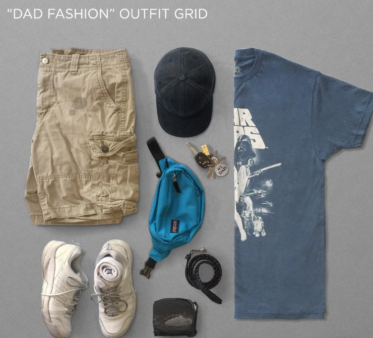
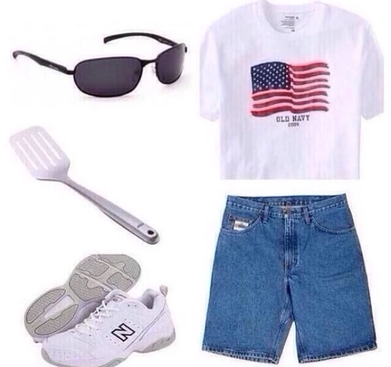
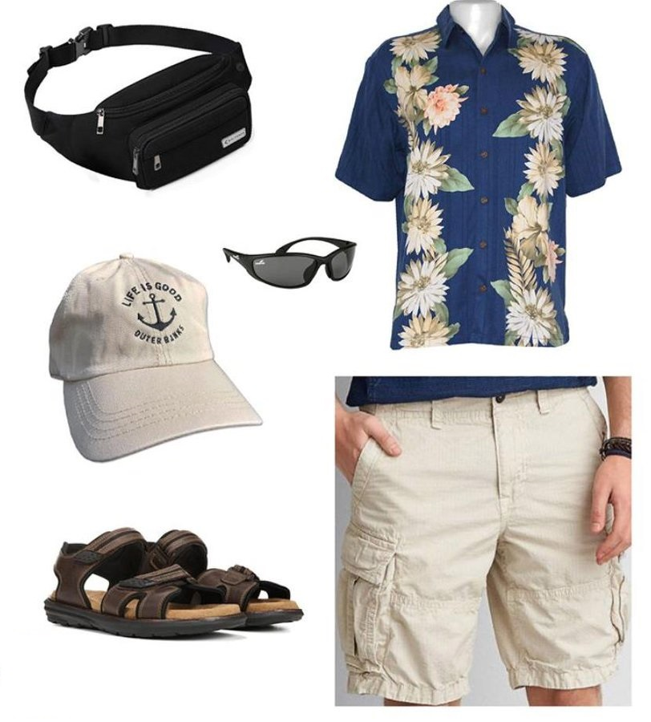
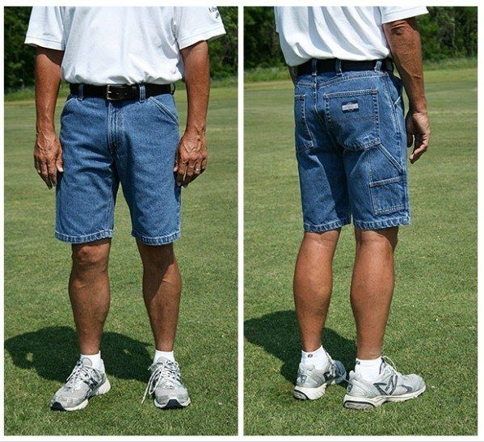
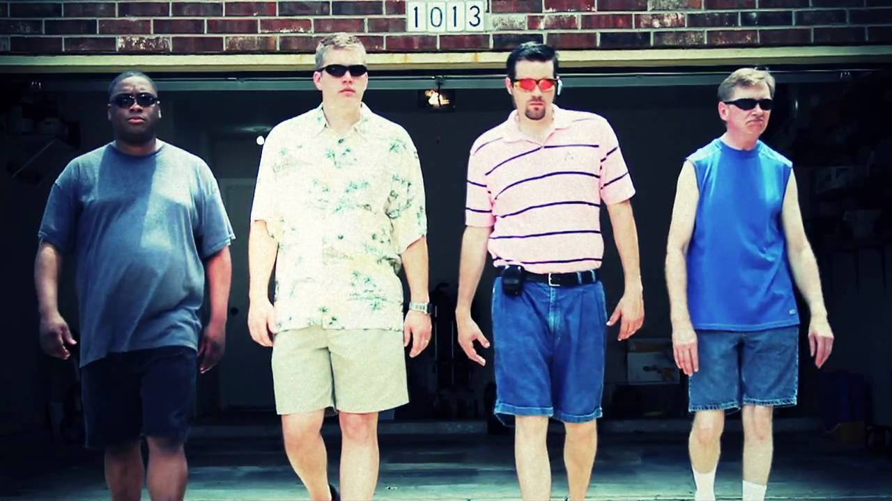
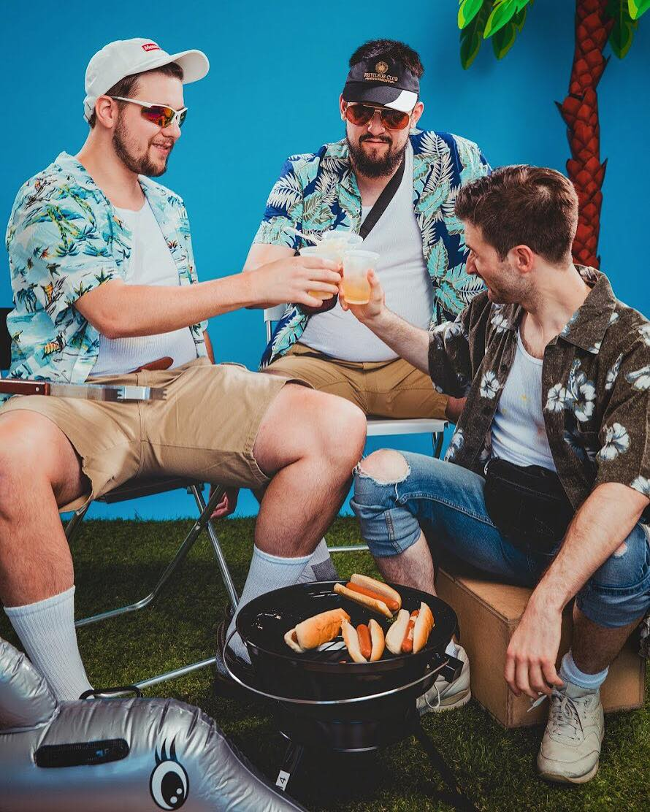

Some of the more common fashion choices of the Basic Dad.
Basic dads have a "unique" sense of style.
Here are a few examples of some common things that basic dads tend to wear. This will help you to spot
them in the wild.
And if you find yourself liking and wearing these same things. This may be helpful for you, to know if
you are becoming a basic dad.



Common Tops-
- T-Shirt- With bands, logos, or with “funny” message on them. Most people have a novelty t-shirt or two in
their closet, but the Basic Dad has ones that are just outdated enough not to be trendy or cool. Doesn't matter
to this guy. He will wear them in a completely non-ironic way. Odds are, a Basic Dad probably has a Big Dog or
Panama Jack shirt somewhere in his closet.
To go with that…. There's rarely a circumstance where a Basic Dad won't have his shirt tucked into their pants,
even if it's a tanktop, sweater, button-up, Polo, Halloween costume, or whatever. A Basic Dad has gotta
tuck.
- Oddly Buttoned Shirts- often “Hawaiian tourist” or floral print shirts
If a Basic Dad is wearing a shirt with buttons on it, he isn't going to play by your rules. He's either going to
have way too many buttons done or far from enough, like Tom Selleck from Magnum PI. It's all or nothing with
buttons. All torso, or no torso whatsoever.
Common Bottoms-
- Jorts or Cargo Shorts- Often with excessive pockets. If there's one thing Basic Dads have in common with John
Cena, it's the love of jean shorts. Which honestly doesn't make a lot of sense. Denim doesn't breathe well at
all, so if it's hot enough to wear shorts, wouldn't you want maximum comfort? Basic Dads do not have time to
listen to your logic and reasoning.

Shoes/Footwear
- White New Balance Sneakers- (possibly slightly tinted green from grass stains). These are a staple in every
Basic Dad’s wardrobe. They're perfect for business, pleasure, or the casual 3 on 3 pick-up game.
- Sandals- (with socks). Basic Dads have to keep it classy. That's why they keep those trademark dress socks on
even when wearing the most casual of shoes. It's a lethal combination.
- Tube socks- pulled all the way up. Not only is it a bizarre fashion choice to wear those long, black socks
with a pair of shorts, it also kind of defeats the purpose of wearing shorts when your socks cover as much leg
as a pair of jeans. This is a non-issue for the Basic Dad.
Accessories
- Braided Belts-
Pants or Shorts are always belted. Often with this leather wicker style belt. Some think belts are used to hold
up your pants, but not the Basic Dad. Basic Dads will make room for a belt even if his jeans are too small. It's
more about just knowing that leather is wrapped around his waist than it is for any practical reasons. If he
could wear a belt with swim trunks, he would be all over it.
- Transition Lenses. ...etc.

Don't be judgemental of basic dad attire, even if their style is a little weird. One day
it just might be you sporting this quirky fashion.

For MORE great Dad content Please visit some of our favorite Dad sites listed below